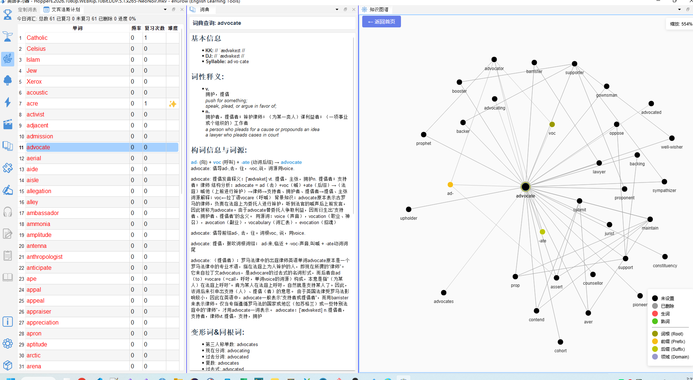
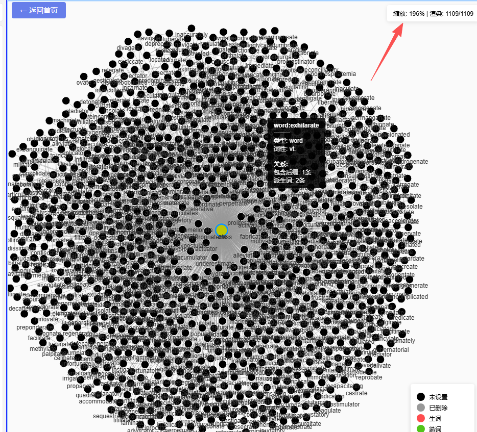
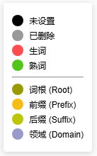

知识图谱
🔒 本功能需要解锁知识图谱数据包（KG）。试用版提供有限节点演示。
16.1 功能说明
知识图谱（🕸️ 知识图谱）将词汇之间的关联关系以可交互的网络图形式呈现，帮助您：
- 发现一个词的语义邻居（意思相关的词）
- 找到该词的同根词（词形相关）
- 了解词汇在语言体系中的位置
- 以词汇群为单位系统拓展词汇量
16.2 打开知识图谱
- 点击工具栏的 🕸️ 拓展词汇量图标
- 或直接点击「知识图谱」面板标签
- 在词汇列表中点击任意单词 → 知识图谱自动导航到该词的子图

16.3 图谱交互操作

节点右键菜单
16.4 节点颜色说明
图谱中的节点颜色表示该词的掌握状态：

16.5 探索词汇关联的策略
扩散学习法
从一个不熟悉的词出发，向外探索：
- 在目标词表中选中一个生词（如
ambiguous） - 知识图谱显示其关联词（如
ambiguity、vague、obscure...） - 对周边节点按颜色筛选：绿色节点是已会的词，帮助记忆；灰色/红色节点是需要学的词
- 选择 2–3 个看起来有用的关联词，加入定制词表，下次重点学习
词汇群收录
- 双击图谱中的关键词根词（如
dict：说话/命令相关词群） - 查看周边的同根词（
dictate、dictator、diction、predict、contradict...） - 点击「全部收录」→ 所有节点添加到定制词表
- 切换到定制词表，集中学习这一词汇群